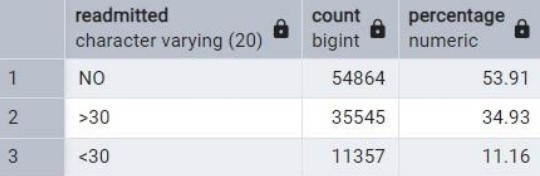
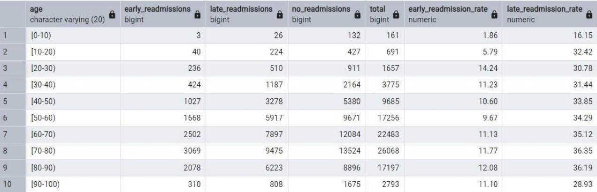
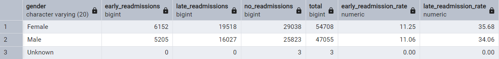
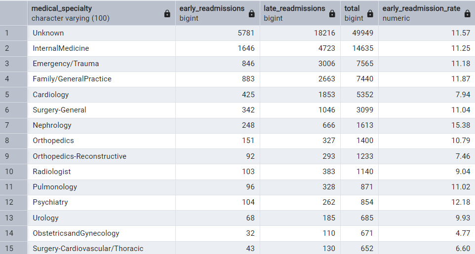
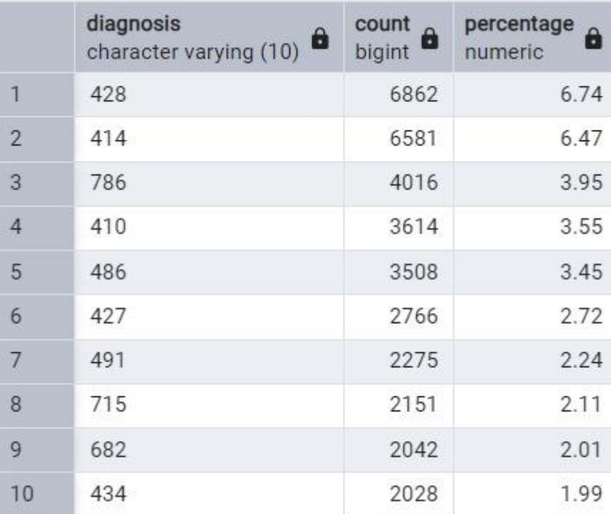
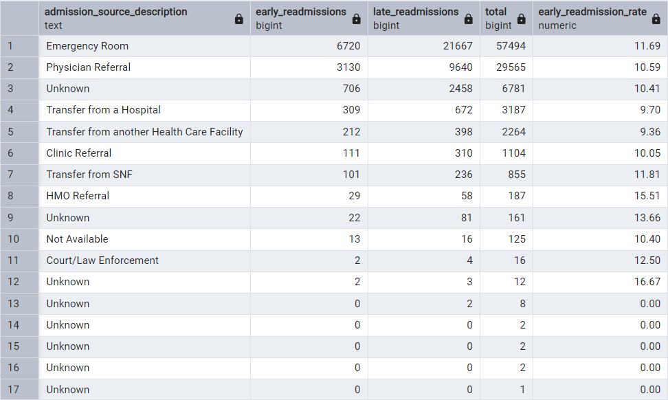
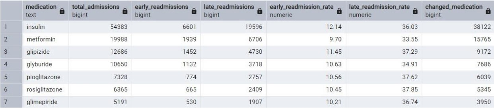

🔍 Hospital Readmission Analysis
Uncovering patterns in patient readmissions using SQL-based data analysis.
📌 Introduction
Hospital readmissions are a major challenge in healthcare, leading to increased costs and patient risks. This project examines hospital readmission data to identify key factors contributing to high readmission rates, enabling better decision-making for patient care and hospital management.
🎯 Key Objectives
- Analyze hospital readmission trends based on age, gender, discharge destinations, and medical conditions.
- Assess the impact of diabetes medications on patient readmissions.
- Utilize advanced SQL techniques to derive meaningful insights from healthcare data.
📊 Data Overview
The dataset consists of thousands of hospital admission records, including:
- Patient demographics: Age, gender, race.
- Admission details: Type, source, time in hospital.
- Medical history: Diagnoses, procedures, medications.
- Treatment details: Diabetes medication usage, insulin prescriptions.
- Readmission status: Patients readmitted within 30 days vs. beyond 30 days.
🛠 Data Processing
The dataset required extensive preprocessing before analysis, including:
- Handling Missing Data: Columns with excessive missing values (e.g., "weight", "payer_code") were dropped, while others were filled with appropriate values (e.g., "Unknown" for categorical variables).
- Data Standardization: Categorical variables like "Gender" were standardized (e.g., merging variations like "M", "Male").
- Feature Engineering: Admission sources, diagnoses, and medications were grouped for better interpretability.
- SQL-Based Processing: Used **CTEs, window functions, and aggregations** to optimize queries and improve insights.
📊 Exploratory Data Analysis (EDA) & Findings
1️⃣ Total Readmitted Patients
🔢 Total patients readmitted: 46.09% of the dataset had hospital readmissions.
2️⃣ Readmission Trends by Age & Gender
 - 📊 Older patients (60+ years) have a significantly higher readmission rate.
- 👨⚕️ Gender has no significant impact on readmission rates. Male and female patients have similar readmission percentages.
3️⃣ Readmissions by Medical Specialty
- 🏥 Internal Medicine & Emergency/Trauma show the highest readmission rates.
- 🩺 Specialties like Cardiology & Endocrinology also contribute significantly.
4️⃣ Readmissions by Diagnosis
- ❤️ Heart failure (ICD-9 Code: 428) is the leading cause of readmissions.
- 🫁 Respiratory conditions like Pneumonia & COPD also have high readmission risks.
5️⃣ Readmissions by Admission Source
- 🚑 Patients admitted through the Emergency Room have the highest readmission rate.
- 🏥 Hospital transfers also contribute significantly to readmissions.
6️⃣ Impact of Diabetes Medications
- 💊 Insulin users have the highest readmission rates (36.03%).
- 🩸 Oral medications like Metformin & Glyburide show lower readmission risks.
7️⃣ Correlation Analysis Between Numeric Variables & Readmissions
📉 Weak correlation observed between numerical variables and readmissions, suggesting other factors play a bigger role.
✅ Conclusion & Recommendations
- Older patients & chronic disease patients have higher readmission risks. Hospitals should focus on post-discharge monitoring.
- Patients on insulin require closer follow-up, as they show significantly higher readmissions.
- Emergency admissions & hospital transfers show the highest readmission risks.
- Improving post-discharge care in SNFs & hospitals can reduce readmission rates.
📜 Want to See the Full Project?
Check out the complete project with SQL queries, analysis, and insights.
View Full Project